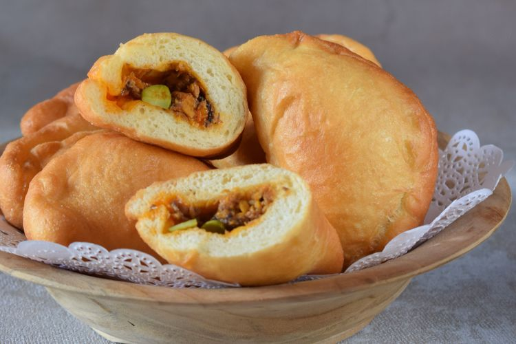

Panada

Panada is a type of fried bread originating from Manado, North Sulawesi. Unlike regular fried bread, panada has fish filling. Panada is delicious eaten both in the morning as breakfast and in the evening. Panada can also be used as a choice of accompanying snacks when drinking tea.
Ingredients:
Main Ingredients:
- 250 grams of flour
- 100 grams of all-purpose flour
- 1 tablespoon of yeast
- 1 tablespoon of sugar
- 1 teaspoon of salt, dissolved in 125 ml of warm water
- 1 egg
- 1 tablespoon of margarine
- 50 ml of oil
Panada Filling:
- 1 mackerel tuna, cleaned and chopped
- 4 stalks of basil leaves
- 1 pandan leaf, thinly sliced
- 1 kaffir lime leaf, thinly sliced
- 2 red chilies, cut into pieces
- 200 ml coconut milk sugar salt
- 2 tomatoes, cut into pieces
Smooth seasoning:
- 5 red onions
- 3 cloves of garlic
- 2 grains of hazelnut, roasted
- 1 cm ginger, grated
Steps:
- Rub the fish that has been cleaned with salt. Boil water and bay leaves. Add the fish, simmer the fish until cooked. set aside.
- To make the spice powder, place all ingredients in a small bowl of a food processor. Mash or crush to make a paste.
- Heat the oil, sauté the ground spices until fragrant. Add all filling ingredients, except tomatoes and coconut milk, stir well. Pour in the coconut milk, stir until the coconut milk reduces. Add tomatoes, stir well. Lift, set aside.
- Mix all the dry ingredients for the skin dough. Add eggs and salt, stir. Add margarine, stir. Leave it for 30 minutes.
- Deflate the dough and divide the dough into 40 grams.
- Flatten the dough, put 2 tablespoons of the filling in the middle. Then fold it in a half circle, and close the edges.
- Heat oil in a pan, fry until golden brown and cooked. Lift and serve.